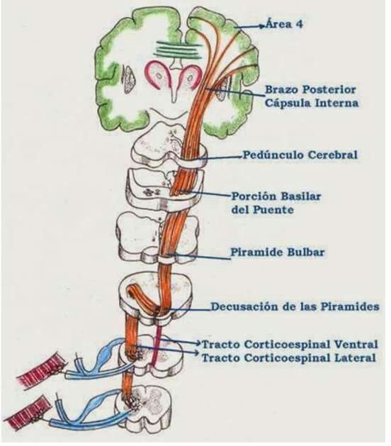

Localizada en el lóbulos frontal, específicamente en el giro precentral. Aquí se originan las neuronas motoras superiores encargadas del movimiento voluntario.
Zona de fibras nerviosas que llevan la información desde la corteza hacia el tronco encefálico y la médula. Es una estructura clave porque cualquier lesión aquí puede afectar grandes regiones del cuerpo.
Parte del tronco encefálico por donde pasa el tracto corticoespinal descendente.
Las fibras siguen descendiendo a través de esta parte del puente (protuberancia).
Se encuentran en el bulbo raquídeo. Las fibras se agrupan aquí justo antes de cruzar al lado opuesto.
Punto en el que aproximadamente el 85-90% de las fibras cruzan al lado opuesto (contralateral). xºxLo que explica por qué un daño en el hemisferio derecho del cerebro afecta el lado izquierdo del cuerpo.
Fibras que ya cruzaron en la decusación y descienden por el lado opuesto de la médula. Controla movimientos finos y precisos, especialmente de extremidades.
Fibras que no cruzan en la decusación, sino que lo hacen más abajo en la médula. Participan en el control de músculos axiales (tronco, cuello).